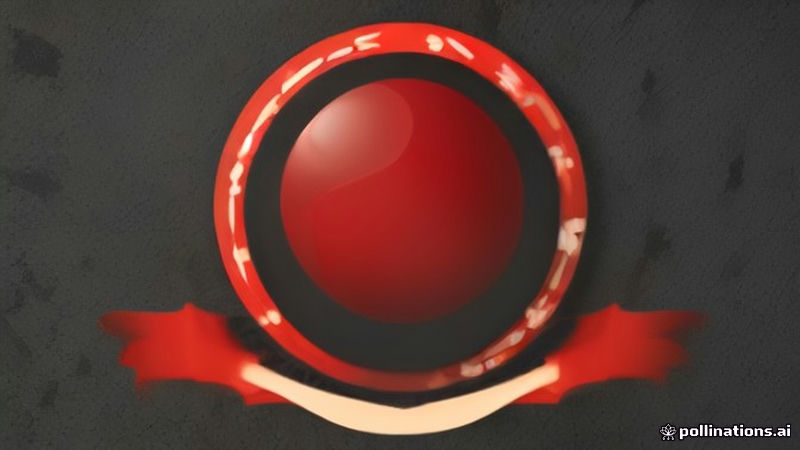

রাশিয়া দুই ফরাসি আইনপ্রণেতা ও দুই সাংবাদিককে প্রবেশ নিষেধ
France 24, Al Jazeera English · 2026-11-11
AI-generated illustrationমস্কো ফ্রান্সের প্রো‑রাশিয়ান টিভি কমেন্টেটর এক্সেনিয়া ফেডোরোভার বহিষ্কারের প্রতিক্রিয়ায় দুই আইনপ্রণেতা ও দুই সাংবাদিককে রাশিয়ায় প্রবেশ নিষেধ করেছে।
ফ্রান্স ২৪ অনুযায়ী, মস্কো দুই ফরাসি আইনপ্রণেতা এবং দুই ফরাসি সাংবাদিককে রাশিয়ায় প্রবেশ নিষেধের ঘোষণা দিয়েছে। এই নিষেধাজ্ঞা প্যারিসের প্রো‑রাশিয়ান টিভি কমেন্টেটর এক্সেনিয়া ফেডোরোভার, যিনি পূর্বে RT ফ্রান্সের প্রধান ছিলেন, তার বহিষ্কারের প্রতিক্রিয়া।
আল জাজিরা ইংরেজি রিপোর্ট করেছে যে ক্রেমলিনের মুখপাত্র বলেন, এই পদক্ষেপটি RT ফ্রান্সের প্রাক্তন প্রধান রাশিয়ান কমেন্টেটরের বহিষ্কারের প্রতিফলন।
এই পারস্পরিক পদক্ষেপ রাশিয়া ও ফ্রান্সের মধ্যে কূটনৈতিক উত্তেজনা বাড়িয়ে তুলেছে, বিশেষ করে রাষ্ট্র-নিয়ন্ত্রিত মিডিয়া ব্যক্তিত্বদের নিয়ে। উভয় দেশ সাম্প্রতিক মাসে মিডিয়া কর্মীদের বহিষ্কারের আদান-প্রদান করেছে।
Written by AI from facts reported by the outlets named above. It may contain errors; check the original reporting.English version
Russia bans two French lawmakers and two journalists
Moscow announced a ban on two French lawmakers and two French journalists, according to France 24. The ban is a response to Paris's expulsion of pro‑Russian TV commentator Xenia Fedorova earlier this year.
Al Jazeera English reported that a Kremlin spokeswoman said the measure mirrors the expulsion of the Russian commentator who previously headed RT France.
The reciprocal action highlights escalating diplomatic tensions between Russia and France over media figures linked to state‑run outlets. Both countries have exchanged expulsions of media personnel in recent months.